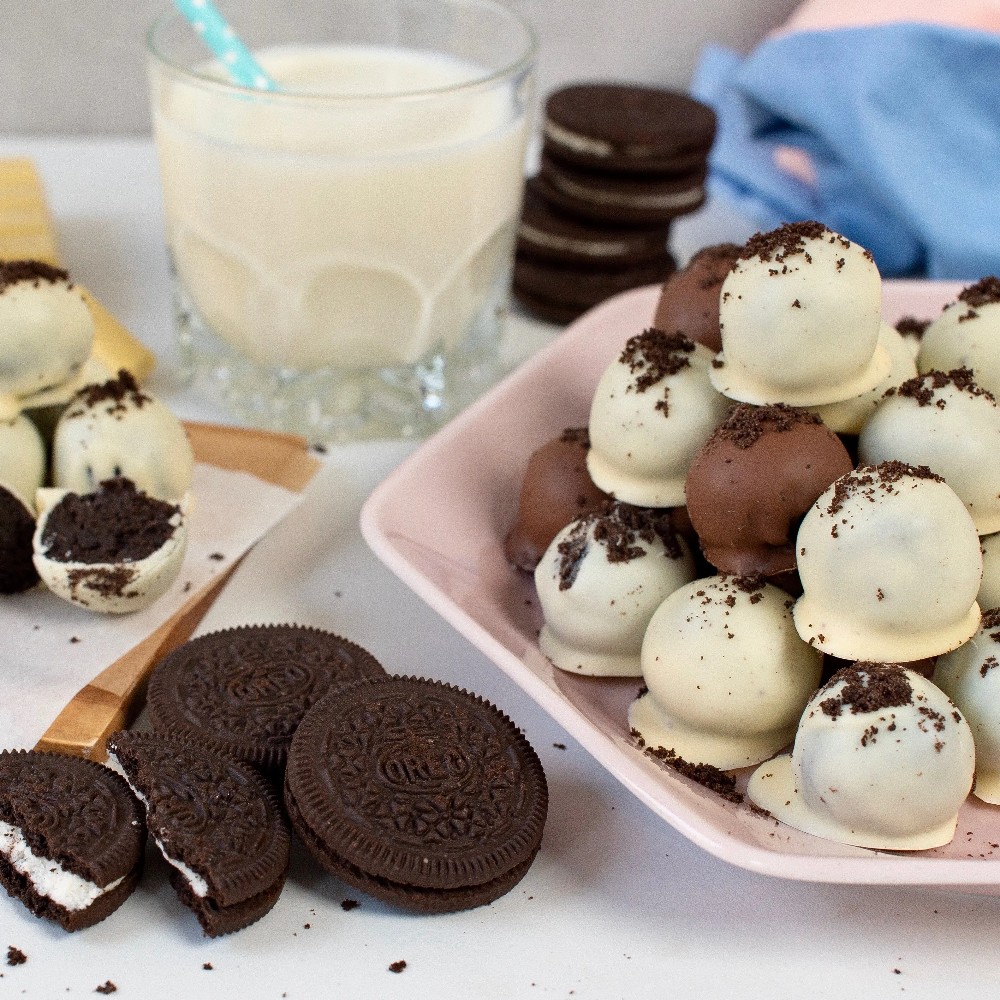

Oreo Truffles

Description
This recipe can be integrated to a bulking meal plan. Rich in calorie and
easy way to spice up your calorie intake.
Ingredients
- 1 pack Oreos
- 2 tbsps cream cheese
- 1 bar (150g) cooking chocolate
Instructions
- Crush Oreos until you have fine crumbs using a blender or by hand. Set aside 1 tbsp crumbs for decorating later.
- Add the cream cheese to Oreo crumbs and mix until everything is fully combined.
- Roll the Oreo and cheese mixture into bitesize balls.
- Place these on a tray lined with greaseproof paper.
- Put them in the fridge to harden for about 20 mins (or 10 mins in the freezer if you're running out of time).
- Once the truffles have hardened, coat them in melted chocolate and sprinkle on Oreo crumbs while the chocolate is still wet.
- Keep them in the fridge until serving.